OTIUM OTIUM is the practice of deliberate leisure. In the classical sense, otium is not escape from work but time when attention returns to memory, landscape, and thought — without a utilitarian deadline.
We shape routes for lingering, not for checklist tourism. The goal is presence in a place rather than consumption of sights.
OTIUM is not a tour operator. It is an invitation to walk, pause, and leave a route unfinished if the light on a façade deserves another minute.
Arc de Triomf
Arc de Triomf
Address: Passeig Lluís Companys | Style: Neo-Mudéjar
Brick Mudejar-inspired arch built as the 1888 fair main gate—now a promenade to the Ciutadella.
Facts and details
Bicycle rentals cluster at the nearby park edge.
Morning side-light sculptures read crisply. History
Architect Josep Vilaseca i Casanovas used neo-Moorish brick patterning.
Significance
Skaters, buskers, and cyclists thread beneath daily.
Barcelona Cathedral
Catedral de la Santa Creu i Santa Eulàlia
Address: Pla de la Seu, Gothic Quarter | Style: Catalan Gothic / historicist façade
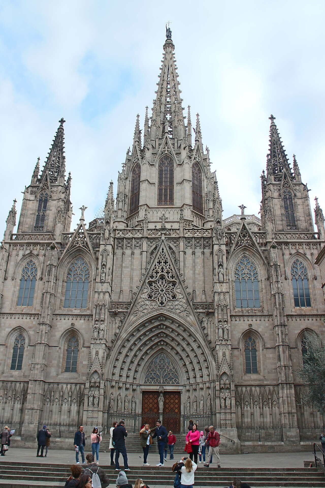
Neo-Gothic main front above a 13th–15th-century Gothic nave with geese in the cloister.
Facts and details
Dress respectfully; choir times vary.
Lift to roof offers tight city vistas on selected tickets. History
Dedicated to Saint Eulàlia; façade completion belongs to the 19th century.
Significance
Liturgical heart of the old city beside narrow lanes.
Barceloneta Beach
Platja de la Barceloneta
Address: Ciutat Vella waterfront | Style: Urban beachfront
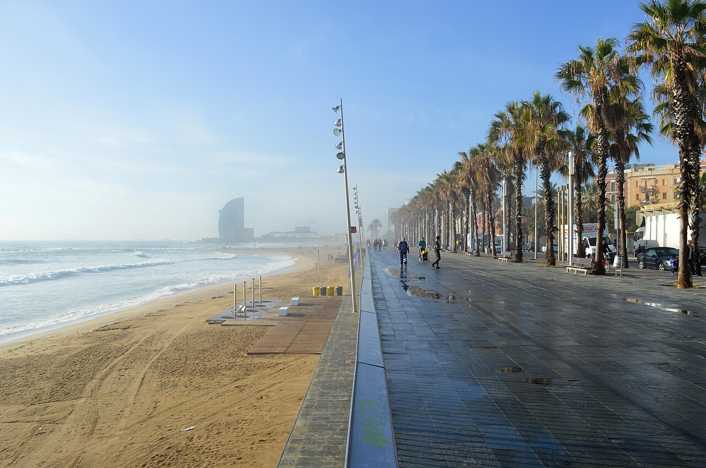
Sandy city beach beside a grid of low fishermen's blocks turned nightlife strip.
Facts and details
Lockers and showers dot the boardwalk.
August sun is fierce—shade is scarce on the sand. History
18th-century planned neighbourhood; Olympic-era promenade upgrades reshaped dunes.
Significance
Swim, run, or watch winter waves without leaving the city core.
Basilica of the Sagrada Família
Basílica de la Sagrada Família
Address: Carrer de Mallorca, Eixample | Style: Modernisme / organic Gothic
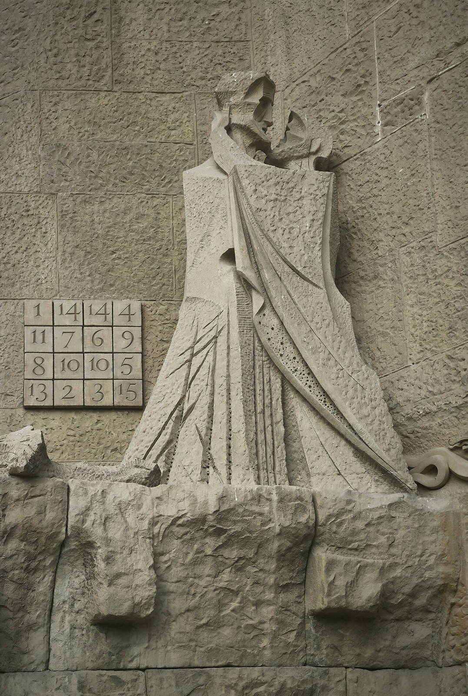
Antoni Gaudí's unfinished basilica—forest-like columns, nativity façade stone, and cranes that signal ongoing work.
Facts and details
Timed tickets sell out; book well ahead.
Passion façade reads cooler and more austere than the nativity side. History
Construction began in 1882; Gaudí directed the project from 1883 until his death in 1926.
Significance
UNESCO site and the city's most recognisable silhouette; towers slowly reach completion.
Camp Nou Stadium
Spotify Camp Nou
Address: Les Corts | Style: 20th-century stadium architecture
FC Barcelona's immense stadium—facade tours and museum exhibits even on non-match days.
Facts and details
Match-day access differs from tour tickets.
Metro near ground gets packed before kick-off. History
Opened 1957; redevelopment plans cycle with club finance headlines.
Significance
Mecca for football culture; expect emotional crowds.
Casa Batlló
Casa Batlló
Address: Passeig de Gràcia | Style: Modernisme
Dragon-scale roof, bone-like columns, and shimmering blue tiles—Gaudí's remodel of a bourgeois house.
Facts and details
Night illuminations change façade readings.
Compare neighbours Domènech i Montaner and Puig i Cadafalch facades. History
1904–1906 renovation for the Batlló family on the Block of Discord.
Significance
Interior volumes and light wells reward an audioguide visit.
Casa Milà (La Pedrera)
Casa Milà / La Pedrera
Address: Passeig de Gràcia | Style: Modernisme
Stone quarry wave façade, attic catenary arches, and warrior chimneys on the roof.
Facts and details
Evening jazz on the roof runs seasonally.
The building still mixes private flats with exhibition space. History
1906–1912 apartment block for the Milà family; UNESCO-listed with other Gaudí works.
Significance
Rooftop sculpture garden defines city postcards.
Columbus Monument
Monument a Colom
Address: Portal de la Pau, end of La Rambla | Style: Historicist monument
Iron column pointing seaward—1888 exposition memorial to Columbus, elevator optional.
Facts and details
Views from the top compete with mast clutter in the harbour.
Surrounding traffic is heavy day and night. History
Marks Barcelona's maritime prestige and World's Fair ambition.
Significance
Pivot between Rambla crowds, Drassanes, and the port.
Hospital de Sant Pau
Hospital de la Santa Creu i Sant Pau
Address: Carrer de Sant Antoni Maria Claret | Style: Modernisme
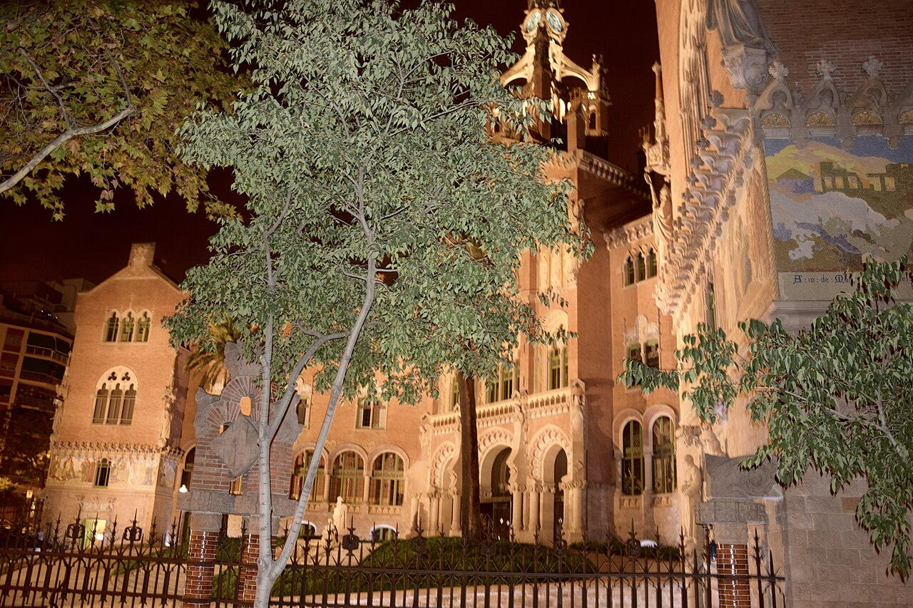
Domènech i Montaner's modernist hospital pavilions—tile domes, gardens, and stained corridors.
Facts and details
Allow time to walk between pavilion courts.
Combine with Recinte Modernista routing maps. History
Early 20th-century expansion of medieval charity healthcare; restoration opened tourism routes.
Significance
UNESCO ensemble rival to the more famous Gaudí trail.
La Boqueria Market
Mercat de Sant Josep de la Boqueria
Address: La Rambla | Style: 19th-century iron market hall
Iron-and-glass market hall packed with fruit stacks, jamón legs, and juice counters.
Facts and details
Watch bags—crowded pinch points attract pickpockets.
Some stalls close Monday mornings. History
Present structure from the 19th century atop older trading grounds.
Significance
Sensory overload best early before tour groups pack the aisles.
Magic Fountain of Montjuïc
Font màgica de Montjuïc
Address: Avinguda Maria Cristina, Montjuïc | Style: Art Deco hydraulics
Huge ornamental fountain with music-and-light shows in front of palatial fairground steps.
Facts and details
Arrive early for railing spots in summer.
National Art Museum crowns the hill behind. History
Built for the 1929 International Exposition; evening choreography restored for tourism.
Significance
Free spectacle—check seasonal timetables.
Montjuïc Castle
Castell de Montjuïc
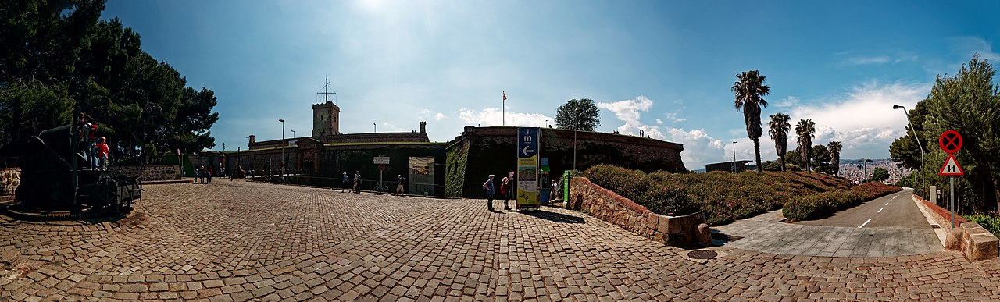
Palau Güell
Palau Güell
Address: Carrer Nou de la Rambla | Style: Modernisme
Early Gaudí urban palace with dark façade and explosive rooftop chimneys overlooking the Raval.
Facts and details
Roof visit is short but memorable.
Rambla proximity means tourist density at the door. History
Built 1886–1890 for industrialist Eusebi Güell; UNESCO-listed.
Significance
Central hall and attic catenary lines foreshadow later masterworks.
Palau de la Música Catalana
Palau de la Música Catalana
Address: Carrer Palau de la Música | Style: Modernisme
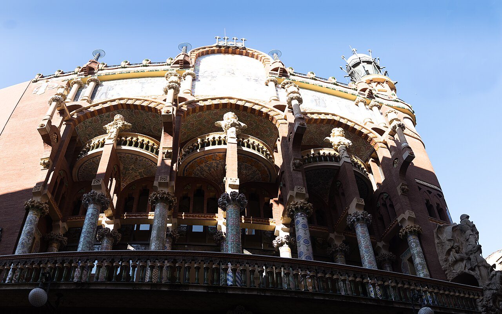
Lluís Domènech i Montaner's flower-packed concert hall—stained glass, mosaics, and allegorical sculpture.
Facts and details
Photography rules change during rehearsals.
The corner façade bursts with colour at midday sun. History
Built 1905–1908 for the Orfeó Català choral society.
Significance
UNESCO monument; guided tours when concerts pause.
Parc de la Ciutadella
Parc de la Ciutadella
Address: Ciutat Vella edge | Style: 19th-century civic park
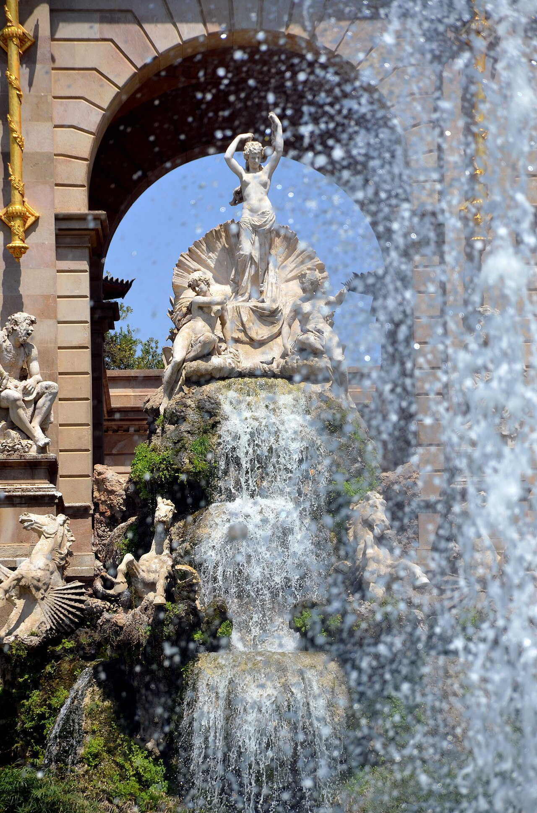
Former fortress grounds with boating lake, palm alleys, zoo corner, and ornate cascade monument.
Facts and details
Barcelona Zoo occupies part of the grounds.
Mammoth statue surprises first-time visitors near the lake. History
Park opened after the 1888 fair; parliament building sits in the old arsenal.
Significance
Lazy picnics and street music on weekends.
Park Güell
Parc Güell
Address: Gràcia / Carmel hill | Style: Modernisme / landscape
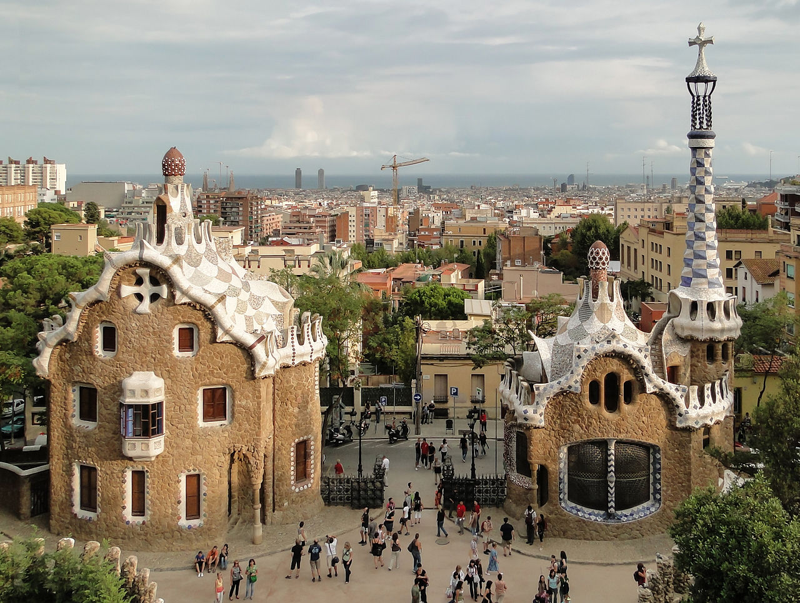
Gaudí-planned garden city fragment with mosaic lizard, hypostyle hall, and serpentine benches over Barcelona.
Facts and details
Entry slots limit crowding on the central zone.
Free surrounding paths still offer views without a ticket. History
Eusebi Güell's early-1900s estate park opened to public use after housing failed to sell.
Significance
Panoramic viewpoint and introduction to trencadís tilework.
Picasso Museum
Museu Picasso
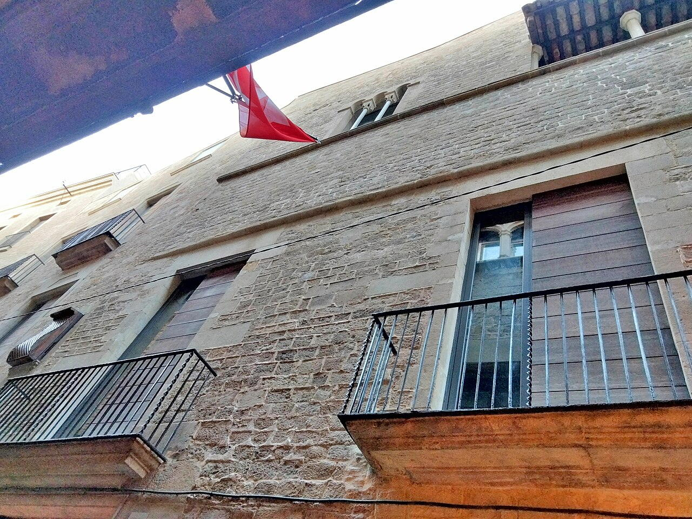
Plaça de Catalunya
Plaça de Catalunya
Address: Centre, hub of axes | Style: Urban monumental square
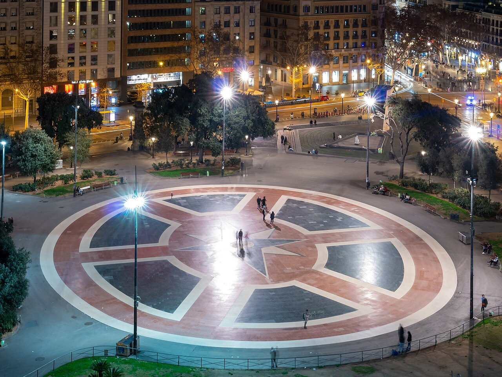
Large square sewing Eixample grid to the old city's mouth—pigeons, fountains, department stores.
Facts and details
Underground passages connect multiple lines.
Evening skate and music culture energises the periphery. History
Laid out in urban expansion plans; metro interchange beneath.
Significance
Default meeting point for metro, airport buses, and protests alike.
Port Vell
Port Vell
Address: Waterfront old harbour | Style: Late 20th-century waterfront renewal
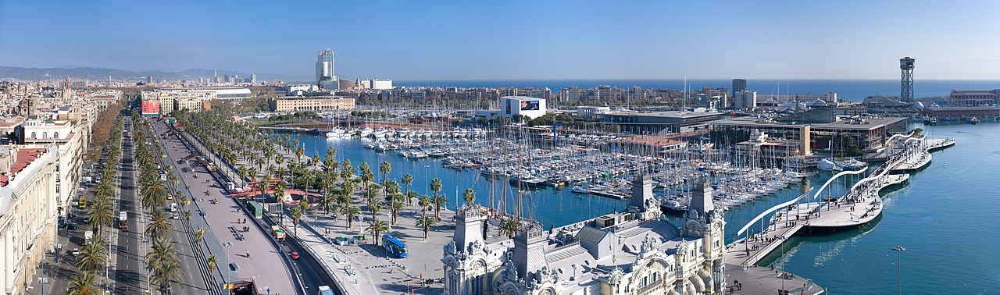
Maremagnum bridges, yacht moorings, and boardwalks between city and sea.
Facts and details
Aquarium building anchors one mole.
Cruise ships dwarf older sailboats at peak season. History
Olympic-era redesign turned industrial docks into leisure quays.
Significance
Evening strolls with gull noise and cable-car views to Montjuïc.
Santa Maria del Mar
Santa Maria del Mar
Address: Plaça de Santa Maria, La Ribera | Style: Catalan Gothic
Single-nave Catalan Gothic basilica built by medieval shipwright guild stone-by-stone.
Facts and details
Rose window geometry rewards binocular detail.
Evening organ concerts possible—check schedules. History
Consecrated in the 1300s; clean proportions emphasize height over clutter.
Significance
Filming favourite for vaulted silence minutes from craft boutiques.
Tibidabo Expiatory Church
Temple Expiatori del Sagrat Cor
Address: Tibidabo hill | Style: Historicist church on summit
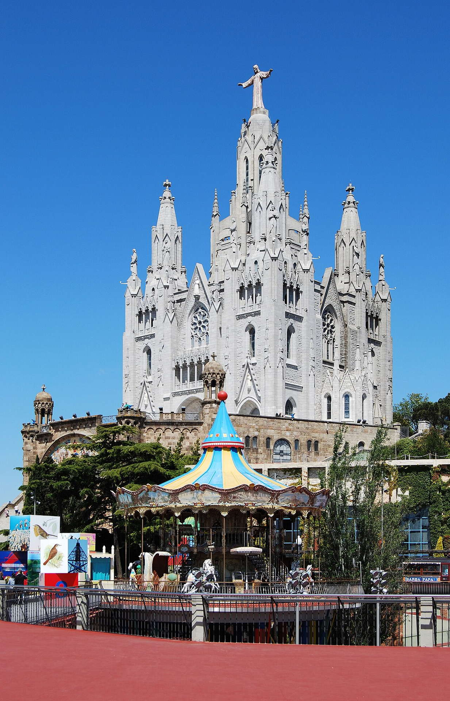
Neo-Gothic church and statue crowning an amusement park ridgeline over the city.
Facts and details
Fog can erase the panorama—check weather.
Ride wristbands are separate from church entry. History
Early 20th-century temple completion after decades of fundraising.
Significance
Funicular and vintage tram links make the ascent part of the fun.
Torre Glòries
Torre Glòries
Address: Plaça de les Glòries | Style: Contemporary skyscraper
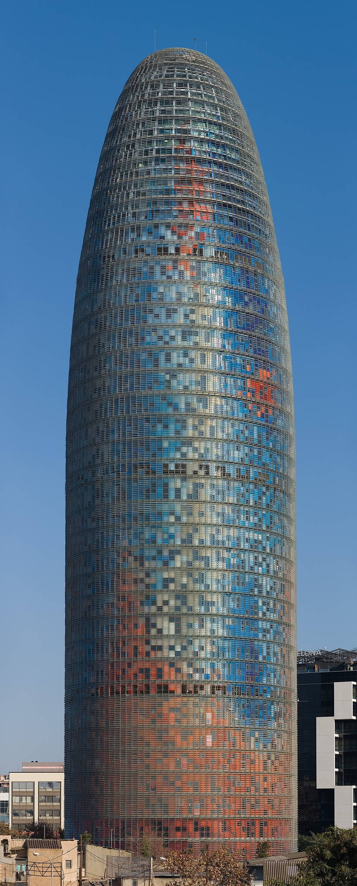
Bullet-shaped high-rise by Jean Nouvel—night LED skin and water features at its base.
Facts and details
Dusk colour cycles are a photo ritual.
Compare silhouette views from diagonal avenues. History
Opened 2005 as Torre Agbar; rebranded; tech and hotel uses shifted over time.
Significance
Anchor of the Glòries district renewal beside Design Museum and Encants market.